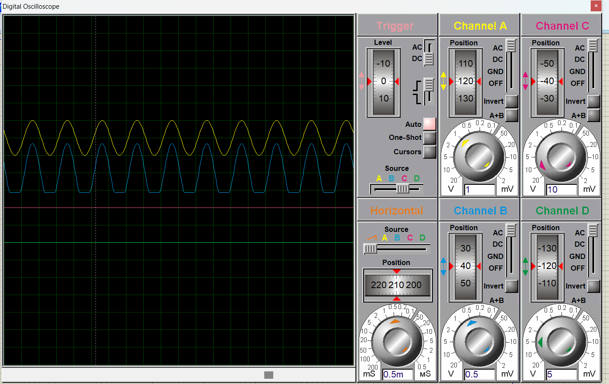

Dioda adalah bagian komponen semikonduktor yang berfungsi menglirkan arus listrik dalam satu arah. Seperti telah dikatakan sebelumnya, semikonduktor disebut demikian berdasarkan ciri khasnya. Walaupun transistor juga termasuk dalam jenis semikonduktor, dioda secara khusus diperuntukan untuk arus listrik yang mengalir dalam satu arah. Dioda digunkan untuk melindungi sirkut, digunakan untuk menangkap signal fruquency radio, dan digunkan pada switch pengatur arus listrik ON/OFF.
Tugas kali ini membuat rangkaian Dioda menggunakan Proteus. Set frekuensi generator dengan tegangan 1 volt dan frekuensinya 1KHz. Setelah dibuat rangkaiannya saya menjalanjan programnya menggunkan Osiloskop bawaan Proteus.
Di sini bisa dilihat terdapat beberapa chanel yaitu chanel A, chanel B, chanel C, dan chanel D. Disini sayamenggunkan chanel A dan chanel B.
Ketika saya putar chanel A maka yang terjadi adalah garis gelombang warna kuning pada Osiloskop akan memperbesar dan mempelebar ke arah vertikal. Sama halnya seperti chanel A. Ketika saya memutar chanel B, maka gelombang warna biru akan memperbesar ke arah vertikal juga. Dan ketika di putar kno horizontal, maka yang terjadi adaalh kedua gelombang akan melebar dan mempersempit ke arah horizontal.